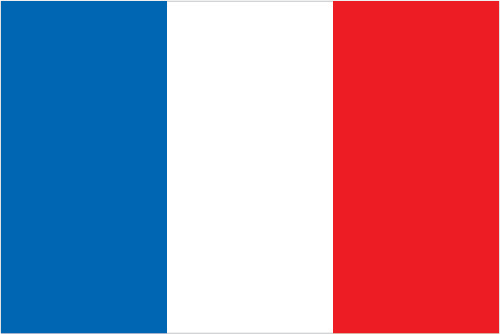
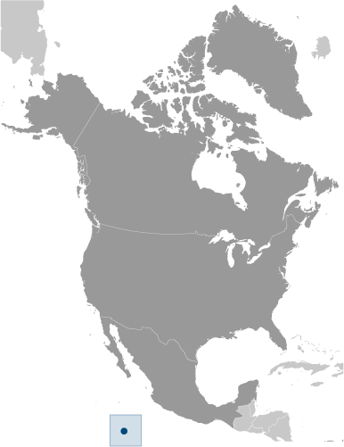

North America :: CLIPPERTON ISLAND
Introduction :: CLIPPERTON ISLAND
-
This isolated atoll was named for John CLIPPERTON, an English pirate who was rumored to have made it his hideout early in the 18th century. Annexed by France in 1855 and claimed by the US, it was seized by Mexico in 1897. Arbitration eventually awarded the island to France in 1931, which took possession in 1935.
Geography :: CLIPPERTON ISLAND
-
Middle America, atoll in the North Pacific Ocean, 1,120 km southwest of Mexico10 17 N, 109 13 WPolitical Map of the Worldtotal: 6 sq kmland: 6 sq kmwater: 0 sq kmcountry comparison to the world: 248about 12 times the size of The Mall in Washington, DC0 km11.1 kmterritorial sea: 12 nmexclusive economic zone: 200 nmtropical; humid, average temperature 20-32 degrees Celsius, wet season (May to October)coral atollmean elevation: NAelevation extremes: lowest point: Pacific Ocean 0 mhighest point: Rocher Clipperton 29 mfishagricultural land: 0%arable land 0%; permanent crops 0%; permanent pasture 0%forest: 0%other: 100% (all coral) (2011 est.)subject to tropical storms and hurricanes from May to Octoberno natural resources, guano deposits depleted; the ring-shaped atoll encloses a stagnant fresh-water lagoonthe atoll reef is approximately 12 km (7.5 mi) in circumference; an attempt to colonize the atoll in the early 20th century ended in disaster and was abandoned in 1917
People and Society :: CLIPPERTON ISLAND
-
uninhabited
Government :: CLIPPERTON ISLAND
-
conventional long form: noneconventional short form: Clipperton Islandlocal long form: nonelocal short form: Ile Clippertonformer: sometimes referred to as Ile de la Passion or Atoll Clippertonetymology: named after an 18th-century English pirate who supposedly used the island as a basepossession of France; administered directly by the Minister of Overseas Francethe laws of France applythe flag of France is used
Economy :: CLIPPERTON ISLAND
-
Although 115 species of fish have been identified in the territorial waters of Clipperton Island, the only economic activity is tuna fishing.
Transportation :: CLIPPERTON ISLAND
-
none; offshore anchorage only
Military and Security :: CLIPPERTON ISLAND
-
defense is the responsibility of France
Transnational Issues :: CLIPPERTON ISLAND
-
none